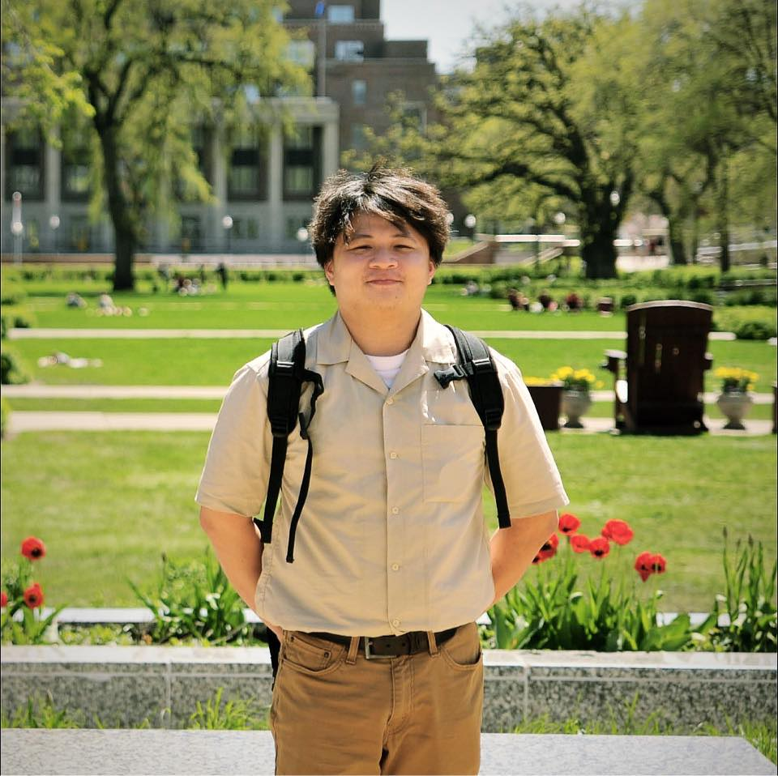
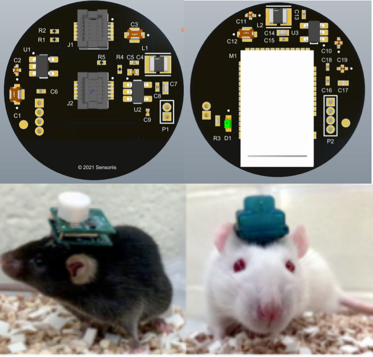

Visiting Researcher
HERO Lab · UC IrvineBuilt and validated wearable biosensing systems using SPG and ECG, integrating optics, embedded firmware, and physiological data collection for blood pressure and HRV analysis.

View my full CVHi! I’m Charlie (he/him/they), born in HCMC, Vietnam. Based in Dallas-Fort Worth, TX.
I’m a PhD candidate in Human-Computer Interaction at the University of Texas at Arlington, working under Cesar Torres in The Hybrid Atelier.
Building sensing systems and interactive tools that work with materials—especially fluids—through rheological visualization, supporting materials literacy for creative and interaction design.
Alongside my HCI research, I collaborate on biosensing and medical devices. During summer 2025, I worked with Dr. Hung Cao at HERO Lab at the University of California, Irvine, developing wearable Speckle Plethysmography systems for blood pressure sensing.
Built and validated wearable biosensing systems using SPG and ECG, integrating optics, embedded firmware, and physiological data collection for blood pressure and HRV analysis.
Designed embedded biomedical signal acquisition, developed nRF BLE firmware, integrated ADS1299 biopotential measurement, and processed ECG and EEG signals.
Implemented embedded test automation for medical-imaging systems, built a LabVIEW interface for X-ray simulator hardware, and validated catheter protocols and mechanics.


A SPG wearable sensor for monitoring pulsatile blood flow across multiple optical configurations and anatomical sites.
Research in progress
A low-cost pneumatic sensing method that maps pressure signatures from inks, gels, pastes, and slurries into an interactive rheological embedding space.
View publication →
A sensor system that captures tacit skills from neon benders and translates them into synchronized visual, audio, light, and vibration cues.
View proceedings →
An Ensemble Kalman Filter method for denoising wearable ECG signals, evaluated against seven filtering techniques on motion-contaminated MIT-BIH data.
View publication →
A compact sensing platform for physiological monitoring in preclinical research.
Research project
A portable magnetic particle spectroscopy device for rapid, wash-free immunoassays, with Bluetooth connectivity and real-time mobile signal processing.
View publication →